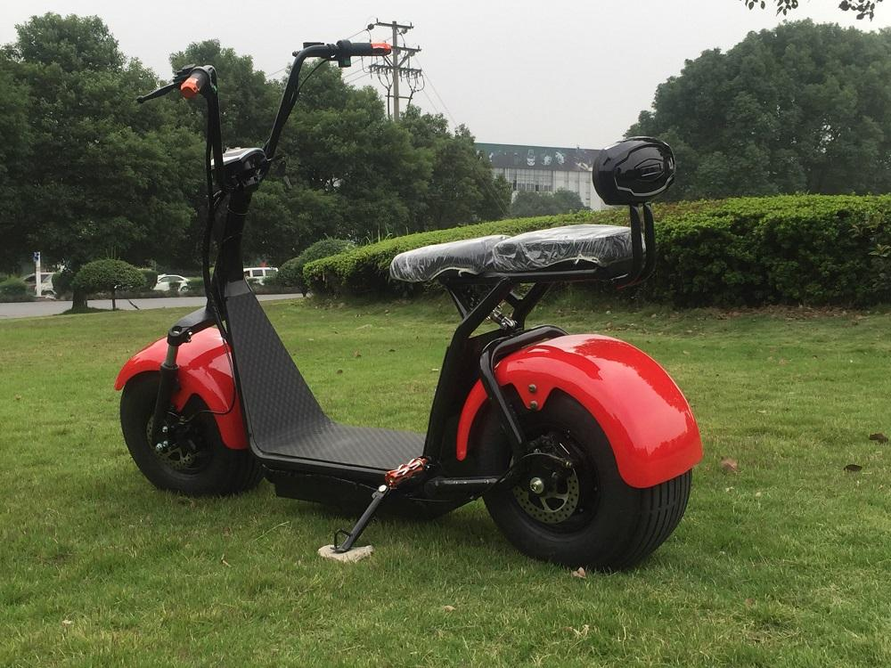
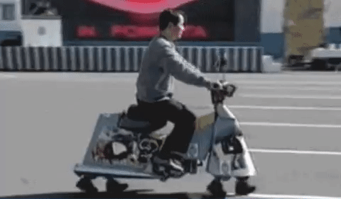

Дневник моих поездок на моем собственном скутере по территории США
2 июня 2019 года
Первый день моего путешествия! Я не верю, что наконец смог отложить все дела в сторону и отправится в путешествие. Поскольку я собирался ехать на скутере, то не мог взять с собой много вещей:
Только все самое необходимое. Как сказал бы Лао-Цзы: Путешествие на тысячу километров начинается с одного шага к скутеру.
14 июля 2019 года
Я видел парочку знаков в стиле Burma Shave на обочине дороги.
Это дорожные знаки, распространенные в США в 1920-1930-е годы и рекламирующие товары для бритья.
Удивительно, что некоторые сохранились до наших дней.
20 августа 2019 года
Итак, я уже проехал 1200 километров и побывал в некоторых интересных местах:
Как собраться в путешествие?
Как собраться в путешествие?
Техника для путешествий: